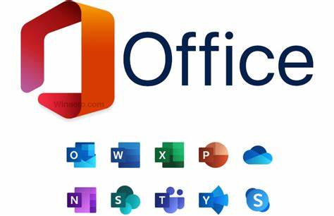
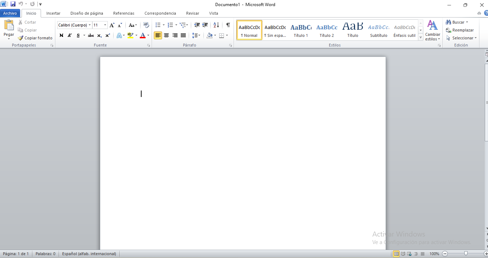
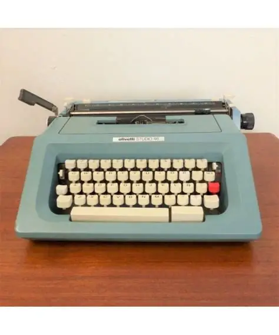
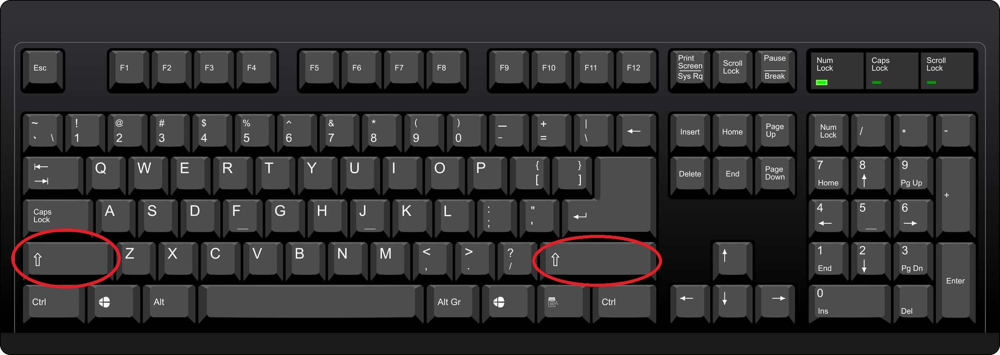
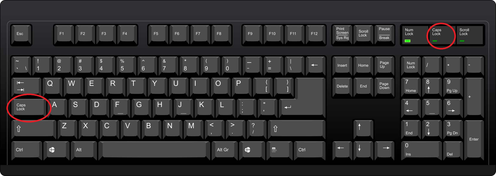
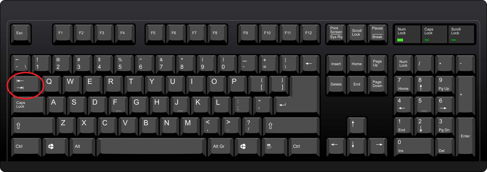
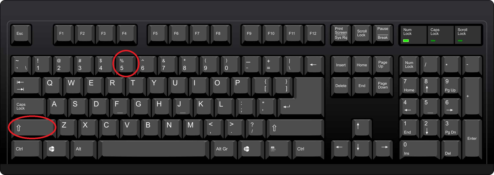

La suite Office es un paquete de programas que sirven para diferentes actividades en diferentes áreas, los más comunes son:
Access
Excel
InfoPath
Picture Manager
One Note
Outlook
Powerpoint
Publisher
SharePoint
Word
Debido a que los productos de esta suit tienen las mismas características básicas a pesar de tener funciones diferentes, se explicarán las de uso más común
Word:
Es la aplicación de uso más común en la mayoría de los equipos informáticos. Es un panel blanco que simula una hoja de papel en la que se puede escribir; es la versión moderna de las máquinas de escribir.
Presenta características particulares que es conveniente conocer:
Escribir: Las teclas que representan caráteres alfabéticos y numéricos muestran el caracter correspondiente en la pantalla. En el caso de las letras, aparecen en minúsculas por defecto, pudiendo colocárlas en mayúsculas con la tecla Shift más la letra, si se quiere escribir sólo en mayúsculas, se presiona la tecla Bloqueo de mayúsculas, la que queda señalada por el led correspondiente.
Tecla Tab (tabulador): Sirve para hacer avanzar el cursor a espacios predefinidos, logrando alinear los textos de manera uniforme. Si se están usando tablas, el tabulador mueve el cursor entre tablas.
Varias teclas, sobre todo los números, tienen unos símbolos secundarios, los que pueden activarse usando la tecla "shift". Por ejemplo, si queremos usar el símbolo de porcentaje que está en la tecla 5, usamos Shift + 5.